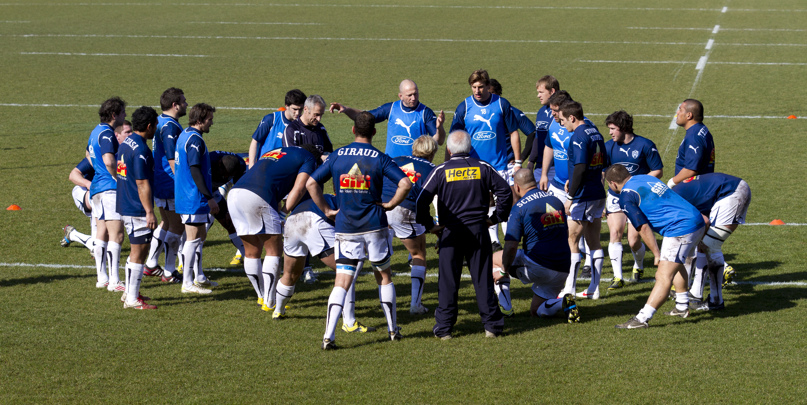

Duración de la entrada en calor
Antes de realizar cualquier ejercicio el precalentamiento debe durar entre 15 y 20 minutos dependiendo de la actividad y del estado físico de cada persona. En caso de que estemos en invierno es recomendable alargar la duración hasta los 20 minutos. Lo mismo ocurre con quienes no practican deporte de forma habitual ya que un sobreesfuerzo sin estar preparado puede dar lugar a roturas musculares.
Calentar grandes grupos musculares
Se recomienda empezar la preparación con una actividad aeróbica rítmica y suave que abarque todos los grupos musculares para continuar a una etapa de calentamiento específico.
Focalizar en músculos concretos
La segunda etapa de una entrada en calor se centra en los músculos individuales, se hace hincapié en aquellos que más se van a utilizar en la práctica deportiva. Es importante acostumbrarse a una rutina para no olvidar ninguno.
Flexibilidad muscular
Uno de los objetivos de la entrada en calor es estirar los músculos ya sea para que respondan mejor ante cualquier esfuerzo como para que estén preparados para proteger los huesos y evitar una rotura si se produce una caída. El estiramiento sirve para mejorar la flexibilidad de los músculos.
Estiramientos al terminar el ejercicio
Tan importante es la entrada en calor como estirar los músculos después de haber realizado ejercicio. Se debe dedicar alrededor de 10 minutos a estirar. El objetivo es aprovechar que los músculos están calientes para estirarlos y evitar que se contraigan por una ausencia repentina de la tensión muscular provocado por el ejercicio.

Foto de Pierre-Selim disponible en Wikimedia Commons
{kind=link}